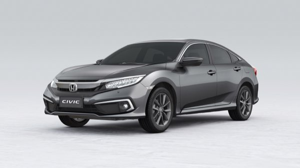

Honda

- Motor em Alumínio 1.5l Turbo 16V DOHC Duplo VTC com Injeção Direta
- Potência (Gasolina) 173cv / 5500rpm
- Torque (Gasolina) 22.4kgfm / 1700 ~ 5500rpm
- Escapamento Duplo
- Transmissão automática do tipo CVT com Paddle Shifts (7 velocidades)
- Tração dianteira
- Suspensão Dianteira MacPherson com coxins hidráulicos
- Suspensão Traseira Multi-link com coxins hidráulicos
- Direção com assistência elétrica progressiva (EPS) com duplo pinhão e relação variável
- Rodas Liga leve 17"
- Pneus 215 / 50R17
- Estepe temporário
- Distância entre eixos (mm) 2.700
- Comprimento (mm) 4.641
- Altura (mm) 1.433
- Largura (mm) 1.799
- Peso em ordem de marcha (kg) 1.329
- Peso bruto total (kg) 1.735
- Volume porta-malas (litros) 517
- Tanque de combustível (litros) 56